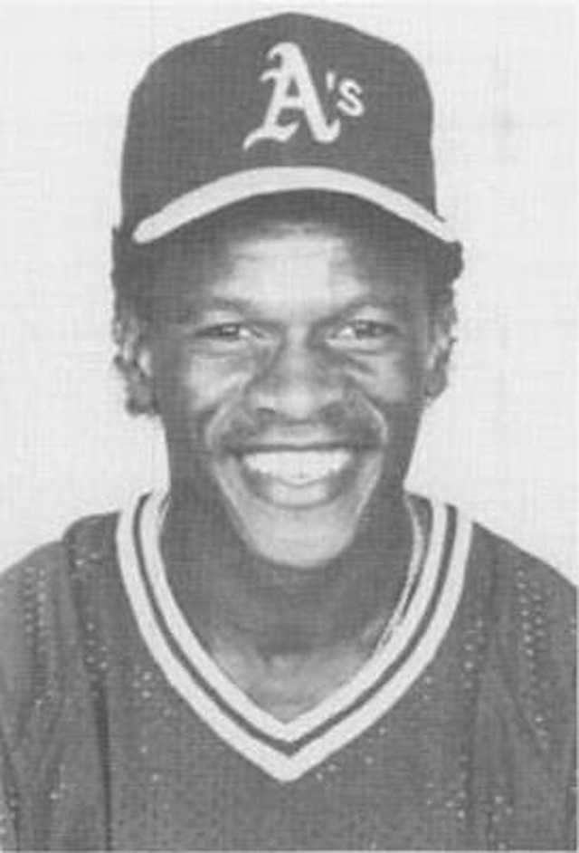
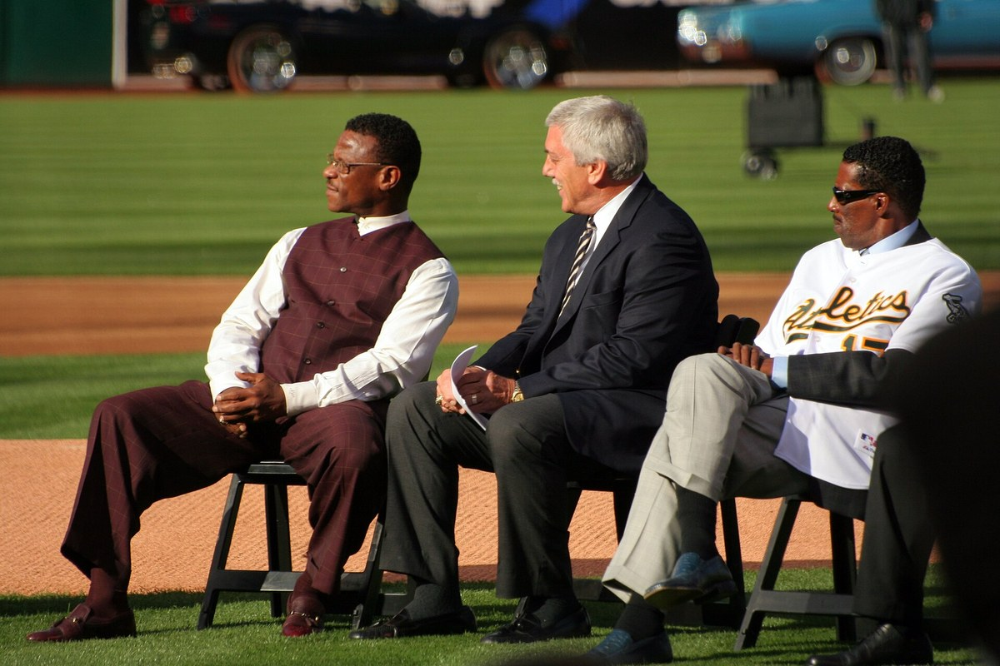

Rickey Henderson
The Oakland Tech kid who stole more bases than anybody ever will, and made every walk feel like a double.
The Rickey Henderson Story
Rickey Henderson was ours before he was anybody's. He was born Rickey Nelson Henley on Christmas Day, 1958, in Chicago, but his mother Bobbie brought the family west, first to her mother's farm in Pine Bluff, Arkansas, and then to Oakland. She married Paul Henderson, who adopted her five boys, and that's how the greatest leadoff man who ever lived ended up with the name on the back of the jersey.
At Oakland Tech he played baseball, basketball and football, and football was his first love. He was an All American running back with two 1,000 yard seasons. Dave Henderson, who'd later share an outfield with him, remembered seeing high school Rickey take a sweep 80 yards and thinking nobody could tackle that. Rickey wanted football. His mother picked baseball. "I gave her the choice to make and she chose baseball," he said, and the whole East Bay owes Bobbie Henderson a thank you card.
The A's took him in the fourth round of the June 1976 draft. In 1977 at Modesto he hit .345, walked 104 times and stole 95 bases, and he gave the credit to his manager Tom Trebelhorn, who sat up with him watching film of Lou Brock and Ty Cobb and let him run whenever he thought he could make it. He reached Oakland on June 24, 1979, and went 2 for 4 with a double and a stolen base against Texas. The team lost 108 games that year. Rickey led them with 33 steals anyway.
Then Billy Martin showed up and the place came alive. Billy Ball was built for Rickey. In 1980 he stole 100 bases, breaking Ty Cobb's American League record of 96, hit .303, drew 117 walks and made his first All Star team. In the 1981 strike year he led the league in runs, hits and steals, won his only Gold Glove, and the A's won the West, beat Kansas City in the Division Series and got swept by the Yankees in the ALCS.
1982 is the year that'll never be touched. He stole 130 bases. Lou Brock's record had been 118. Number 119 came on August 27 in Milwaukee, when Rickey walked three times and stole four bases that night. He followed it with 108 steals in 1983 and 66 more in 1984 before the A's traded him to the Yankees that December in a deal that brought back Jose Rijo, Jay Howell, Eric Plunk, Tim Birtsas and Stan Javier.
He came home on June 21, 1989, in a trade for Plunk, Greg Cadaret and Luis Polonia, and the Bash Brothers suddenly had a guy on base in front of them every night. Oakland won the West by seven games. In the ALCS against Toronto he hit .400, homered twice, scored eight runs, walked seven times and stole eight bases, and he was the series MVP. Then in the Earthquake Series against the Giants he hit .474 with two triples and a homer as the A's swept.
1990 was his MVP year. He hit .325 with 28 home runs and led the league in runs (119), steals (65) and on base percentage (.439). On May 1, 1991, in front of 36,139 at the Coliseum with his mother in the stands and Brock there to watch, he stole third off the Yankees for number 939 and passed Brock for the career record.
The A's won the West again in 1992. On July 5, 1993, he led off both ends of a doubleheader against Cleveland with home runs. Later that month, with Oakland out of it, he was traded to Toronto and won a second ring. He came back for 1994 and 1995, left for San Diego, and then came back one more time in 1998, when at 39 he led the American League in steals (66) and walks (118). He played 14 of his 25 big league seasons in Oakland.
By the time he finished with the Dodgers in 2003 he'd played for nine teams and owned the records for steals (1,406), runs (2,295) and leadoff home runs (81). He had 3,055 hits, 297 home runs and 2,190 walks. He went into Cooperstown in 2009 on the first ballot with 94.8 percent of the vote, and the A's retired his number 24 that August 1.
The A's named the field at the Coliseum after him on April 3, 2017. He was there for the ceremonies during the team's final season in Oakland in 2024, and he died on December 20 of that year. He was 65.
What He Meant to Us
There's a reason the field at the Coliseum had his name on it. Rickey wasn't just the best player the A's ever had. He was an Oakland kid who went to Oakland Tech and played for the Oakland A's and never once acted like that was a step down from anywhere. You can't say that about a lot of superstars. He came back four times. Four. Every time somebody else had him, it felt wrong.
Watching him lead off was like watching a guy pick a lock in public. Walk, lean, gone. Second base, then third, and half the time he'd score on a fly ball and the pitcher would just stand there looking at the dugout. Mitchell Page said it best: when you see Rickey, the score's already one nothing. He drove catchers crazy. He drove the other team's fans crazier, and that was half the fun of being on his side of it.
And the talking. The third person stuff, the snap catch, the strut. People who didn't get him called it showing off. We got it. He thought the folks in the stands paid to be entertained, so he entertained them, and then he went out and broke Ty Cobb's record and Lou Brock's record and Babe Ruth's walk record anyway. 1989, the ALCS and that sweep of the Giants, is about as good as one guy has ever been for one October around here.
When the A's left, it hurt in a lot of ways. Losing Rickey a few months after that last season at the Coliseum hurt in a way I'm still not over. 1,704 games in green and gold. Nobody's catching him. Nobody's even trying.
In Pictures


Why He Was Clutch
Rickey's whole game was pressure. A leadoff walk from him was a double, and everybody in the building knew it, including the pitcher, who'd start throwing over and lose his focus on the hitter. When he said "I like to think that I'm a money player" after the 1989 ALCS, he'd just backed it up with eight steals and two home runs in one series.
The biggest stages were where he was best. In the 1989 postseason he hit .441 with a 1.509 OPS, three homers and 11 steals in nine games, and the A's won it all. In Game 4 at SkyDome he hit two home runs off Mike Flanagan and drove in four. In the clinching Game 4 of the World Series at Candlestick he led off the game with a home run and finished with three hits.
He also delivered under the kind of pressure most guys never face, the slow motion countdown of a record chase with the whole country watching. He was caught stealing in the first inning on May 1, 1991, against Matt Nokes and the Yankees. In the fourth he stole third anyway. That's Rickey. He didn't slow down when it mattered. He sped up.
Clutch Moments
- August 27, 1982
Number 119 in Milwaukee
Rickey came into County Stadium tied with Lou Brock's single season record of 118. He walked in the third inning off Doc Medich and stole second for number 119, a new record. He wasn't done. He walked twice more and stole three more bases, finishing the night with four steals and two runs, and he'd ride it all the way to 130 by the end of the year.
- October 7, 1989
Two homers in Game 4 at SkyDome
With the A's up two games to one in the ALCS, Rickey took Mike Flanagan deep with Walt Weiss aboard in the third inning and then did it again with Mike Gallego aboard in the fifth. Four RBIs, a 6 to 5 Oakland win, and the Blue Jays were one loss from going home.
- October 8, 1989
The pennant, and an MVP trophy
In Game 5 he walked in the first inning, stole second and scored on a Jose Canseco single, then tripled home Walt Weiss in the third. Oakland won 4 to 3 for the pennant. For the series he hit .400 with eight runs, seven walks and eight steals, and he was named ALCS MVP.
- October 28, 1989
Leading off the clincher at Candlestick
After the earthquake and the long wait to resume, Game 4 of the World Series started with Rickey hitting a home run off Don Robinson. He singled in the second, tripled in the sixth and scored, and the A's won 9 to 6 to finish the sweep. He hit .474 in the Series.
- May 1, 1991
939, at home, with his mother watching
Matt Nokes threw him out in the first inning, and the Coliseum groaned. In the fourth Rickey reached on an error, moved up on a Dave Henderson single, and took off for third. Safe. Number 939, one more than Lou Brock, in front of 36,139 people in his hometown. Then, in a short speech on the field, he told the crowd he was the greatest of all time.
- July 5, 1993
Leadoff homers in both games
In a doubleheader against Cleveland at the Coliseum, Rickey hit a leadoff home run off Paul Abbott in the opener and another off Mark Clark to start the nightcap. It was believed nobody had done that since Harry Hooper of the Red Sox in 1913.
The Highlights
What They Said About Henderson
“Today you are the greatest competitor that ever ran the bases in the big leagues.”
“You see very few Rickey Hendersons. You might not see another one for fifty years.”
“I like to think that I'm a money player. When we need a steal or drive home a run, I like to think I'll deliver.”
“If my uniform doesn't get dirty, I haven't done anything in the baseball game”
“He's the greatest leadoff hitter of all time. I'm not sure there's a close second”
“It wasn't until I saw Rickey that I understood what baseball was about. Rickey Henderson is a run, man”
Career Stats
| Year | Team | G | AB | R | H | 2B | 3B | HR | RBI | SB | BB | AVG | OBP | SLG | OPS |
|---|---|---|---|---|---|---|---|---|---|---|---|---|---|---|---|
| 1979 | OAK | 89 | 351 | 49 | 96 | 13 | 3 | 1 | 26 | 33 | 34 | .274 | .338 | .336 | .674 |
| 1980 | OAK | 158 | 591 | 111 | 179 | 22 | 4 | 9 | 53 | 100 | 117 | .303 | .420 | .399 | .819 |
| 1981 | OAK | 108 | 423 | 89 | 135 | 18 | 7 | 6 | 35 | 56 | 64 | .319 | .408 | .437 | .845 |
| 1982 | OAK | 149 | 536 | 119 | 143 | 24 | 4 | 10 | 51 | 130 | 116 | .267 | .398 | .382 | .780 |
| 1983 | OAK | 145 | 513 | 105 | 150 | 25 | 7 | 9 | 48 | 108 | 103 | .292 | .414 | .421 | .835 |
| 1984 | OAK | 142 | 502 | 113 | 147 | 27 | 4 | 16 | 58 | 66 | 86 | .293 | .399 | .458 | .857 |
| 1985 | NYY | 143 | 547 | 146 | 172 | 28 | 5 | 24 | 72 | 80 | 99 | .314 | .419 | .516 | .935 |
| 1986 | NYY | 153 | 608 | 130 | 160 | 31 | 5 | 28 | 74 | 87 | 89 | .263 | .358 | .469 | .827 |
| 1987 | NYY | 95 | 358 | 78 | 104 | 17 | 3 | 17 | 37 | 41 | 80 | .291 | .423 | .497 | .920 |
| 1988 | NYY | 140 | 554 | 118 | 169 | 30 | 2 | 6 | 50 | 93 | 82 | .305 | .394 | .399 | .793 |
| 1989 | NYY | 65 | 235 | 41 | 58 | 13 | 1 | 3 | 22 | 25 | 56 | .247 | .392 | .349 | .741 |
| 1989 | OAK | 85 | 306 | 72 | 90 | 13 | 2 | 9 | 35 | 52 | 70 | .294 | .425 | .438 | .863 |
| 1989 | TOT | 150 | 541 | 113 | 148 | 26 | 3 | 12 | 57 | 77 | 126 | .274 | .411 | .399 | .810 |
| 1990 | OAK | 136 | 489 | 119 | 159 | 33 | 3 | 28 | 61 | 65 | 97 | .325 | .439 | .577 | 1.016 |
| 1991 | OAK | 134 | 470 | 105 | 126 | 17 | 1 | 18 | 57 | 58 | 98 | .268 | .400 | .423 | .823 |
| 1992 | OAK | 117 | 396 | 77 | 112 | 18 | 3 | 15 | 46 | 48 | 95 | .283 | .426 | .457 | .883 |
| 1993 | OAK | 90 | 318 | 77 | 104 | 19 | 1 | 17 | 47 | 31 | 85 | .327 | .469 | .553 | 1.022 |
| 1993 | TOR | 44 | 163 | 37 | 35 | 3 | 1 | 4 | 12 | 22 | 35 | .215 | .356 | .319 | .675 |
| 1993 | TOT | 134 | 481 | 114 | 139 | 22 | 2 | 21 | 59 | 53 | 120 | .289 | .432 | .474 | .906 |
| 1994 | OAK | 87 | 296 | 66 | 77 | 13 | 0 | 6 | 20 | 22 | 72 | .260 | .411 | .365 | .776 |
| 1995 | OAK | 112 | 407 | 67 | 122 | 31 | 1 | 9 | 54 | 32 | 72 | .300 | .407 | .447 | .854 |
| 1996 | SD | 148 | 465 | 110 | 112 | 17 | 2 | 9 | 29 | 37 | 125 | .241 | .410 | .344 | .754 |
| 1997 | SD | 88 | 288 | 63 | 79 | 11 | 0 | 6 | 27 | 29 | 71 | .274 | .422 | .375 | .797 |
| 1997 | ANA | 32 | 115 | 21 | 21 | 3 | 0 | 2 | 7 | 16 | 26 | .183 | .343 | .261 | .604 |
| 1997 | TOT | 120 | 403 | 84 | 100 | 14 | 0 | 8 | 34 | 45 | 97 | .248 | .400 | .342 | .742 |
| 1998 | OAK | 152 | 542 | 101 | 128 | 16 | 1 | 14 | 57 | 66 | 118 | .236 | .376 | .347 | .723 |
| 1999 | NYM | 121 | 438 | 89 | 138 | 30 | 0 | 12 | 42 | 37 | 82 | .315 | .423 | .466 | .889 |
| 2000 | NYM | 31 | 96 | 17 | 21 | 1 | 0 | 0 | 2 | 5 | 25 | .219 | .387 | .229 | .616 |
| 2000 | SEA | 92 | 324 | 58 | 77 | 13 | 2 | 4 | 30 | 31 | 63 | .238 | .362 | .327 | .689 |
| 2000 | TOT | 123 | 420 | 75 | 98 | 14 | 2 | 4 | 32 | 36 | 88 | .233 | .368 | .305 | .673 |
| 2001 | SD | 123 | 379 | 70 | 86 | 17 | 3 | 8 | 42 | 25 | 81 | .227 | .366 | .351 | .717 |
| 2002 | BOS | 72 | 179 | 40 | 40 | 6 | 1 | 5 | 16 | 8 | 38 | .223 | .369 | .352 | .721 |
| 2003 | LA | 30 | 72 | 7 | 15 | 1 | 0 | 2 | 5 | 3 | 11 | .208 | .321 | .306 | .627 |
| Career | 3081 | 10961 | 2295 | 3055 | 510 | 66 | 297 | 1115 | 1406 | 2190 | .279 | .401 | .419 | .820 |
Regular season stats from the MLB Stats API. KCA is the Kansas City Athletics, the same franchise before its 1968 move to Oakland; TOT rows combine a season split between teams. Scroll the table sideways on a phone.
Postseason
| Year | Team | G | AB | R | H | 2B | 3B | HR | RBI | SB | BB | AVG | OBP | SLG | OPS |
|---|---|---|---|---|---|---|---|---|---|---|---|---|---|---|---|
| 1981 | OAK | 6 | 22 | 3 | 6 | 2 | 1 | 0 | 1 | 4 | 3 | .273 | .360 | .455 | .815 |
| 1989 | OAK | 9 | 34 | 12 | 15 | 2 | 3 | 3 | 8 | 11 | 9 | .441 | .568 | .941 | 1.509 |
| 1990 | OAK | 8 | 32 | 3 | 10 | 2 | 0 | 1 | 4 | 5 | 4 | .313 | .378 | .469 | .847 |
| 1992 | OAK | 6 | 23 | 5 | 6 | 0 | 0 | 0 | 1 | 2 | 4 | .261 | .370 | .261 | .631 |
| 1993 | TOR | 12 | 47 | 10 | 8 | 4 | 0 | 0 | 2 | 3 | 9 | .170 | .316 | .255 | .571 |
| 1996 | SD | 3 | 12 | 2 | 4 | 0 | 0 | 1 | 1 | 0 | 2 | .333 | .429 | .583 | 1.012 |
| 1999 | NYM | 10 | 38 | 7 | 10 | 1 | 0 | 0 | 2 | 7 | 3 | .263 | .317 | .289 | .606 |
| 2000 | SEA | 6 | 14 | 5 | 4 | 1 | 0 | 0 | 1 | 1 | 3 | .286 | .412 | .357 | .769 |
| Career | 60 | 222 | 47 | 63 | 12 | 4 | 5 | 20 | 33 | 37 | .284 | .389 | .441 | .830 |
Rickey Henderson: Fast Facts
What years was Rickey Henderson with the Oakland Athletics?
Rickey Henderson was with the Oakland Athletics over 4 stints (1979 to 1984, 1989 to 1993, 1994 to 1995 and 1998) as a left fielder.
What number did Rickey Henderson wear?
Rickey Henderson wore numbers 35, 24.
What are Rickey Henderson's signature numbers?
1,406 career stolen bases, the MLB record; 2,295 career runs scored, the MLB record; 867 stolen bases in an A's uniform; 130 steals in 1982, the single season record.
What were Rickey Henderson's biggest honors?
1990 AL MVP; 1989 ALCS MVP; 2x World Series champion (1989 Athletics, 1993 Blue Jays); 10x AL All Star (1980, 1982, 1983, 1984, 1985, 1986, 1987, 1988, 1990, 1991); AL Gold Glove (1981).
What are some of Henderson's biggest moments?
Number 119 in Milwaukee (August 27, 1982); Two homers in Game 4 at SkyDome (October 7, 1989); The pennant, and an MVP trophy (October 8, 1989). Every one is in the Clutch Moments section above.